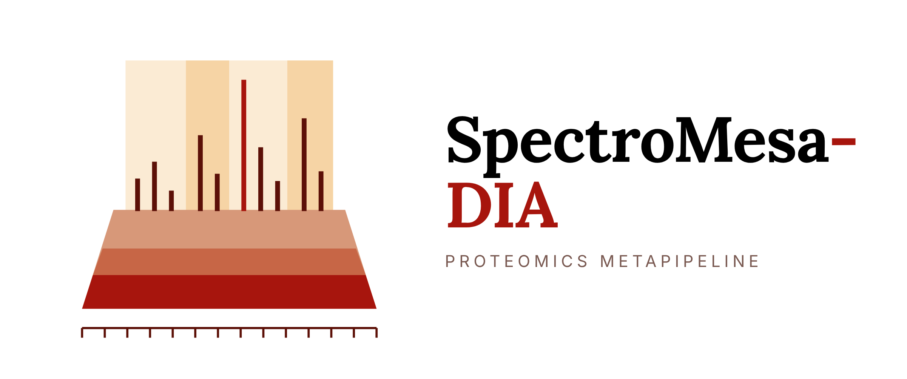

SpectroMesa-DIA

SpectroMesa-DIA is a Nextflow pipeline for analyzing unfractionated and fractionated DIA proteomics experiments, including Bruker diaPASEF data.
Start with the overview and installation guide.
Download the latest release · Run an analysis · Run the tests · Pipeline reference
BSD 3-Clause License. Copyright © 2026 Sanford Burnham Prebys Medical Discovery Institute (Boutros Lab).